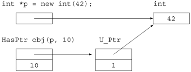
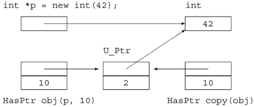

13.5. Managing Pointer MembersThis book generally advocates the use of the standard library. One reason we do so is that using the standard library greatly reduces the need for pointers in modern C++ programs. However, many applications still require the use of pointers, particularly in the implementation of classes. Classes that contain pointers require careful attention to copy control. The reason they must do so is that copying a pointer copies only the address in the pointer. Copying a pointer does not copy the object to which the pointer points. When designing a class with a pointer member, the first decision a class author must make is what behavior that pointer should provide. When we copy one pointer to another, the two pointers point to the same object. When two pointers point to the same object, it is possible to use either pointer to change the underlying object. Similarly, it is possible for one pointer to delete the object even though the user of the other pointer still thinks the underlying object exists. By default, a pointer member has the same behavior as a pointer object. However, through different copy-control strategies we can implement different behavior for pointer members. Most C++ classes take one of three approaches to managing pointer members:
In this section we look at three classes that implement each of these different approaches to managing their pointer members. A Simple Class with a Pointer MemberTo illustrate the issues involved, we'll implement a simple class that contains an int and a pointer:
// class that has a pointer member that behaves like a plain pointer
class HasPtr {
public:
// copy of the values we're given
HasPtr(int *p, int i): ptr(p), val(i) { }
// const members to return the value of the indicated data member
int *get_ptr() const { return ptr; }
int get_int() const { return val; }
// non const members to change the indicated data member
void set_ptr(int *p) { ptr = p; }
void set_int(int i) { val = i; }
// return or change the value pointed to, so ok for const objects
int get_ptr_val() const { return *ptr; }
void set_ptr_val(int val) const { *ptr = val; }
private:
int *ptr;
int val;
};
The HasPtr constructor takes two parameters, which it copies into HasPtr's data members. The class provides simple accessor functions: The const functions get_int and get_ptr return the value of the int and pointer members, respectively; the set_int and set_ptr members let us change these members, giving a new value to the int or making the pointer point to a different object. We also define the get_ptr_val and set_ptr_val members. These members get and set the underlying value to which the pointer points. Default Copy/Assignment and Pointer MembersBecause the class does not define a copy constructor, copying one HasPtr object to another copies both members:
int obj = 0;
HasPtr ptr1(&obj, 42); // int* member points to obj, val is 42
HasPtr ptr2(ptr1); // int* member points to obj, val is 42
After the copy, the pointers in ptr1 and ptr1 both address the same object and the int values in each object are the same. However, the behavior of these two members appears quite different, because the value of a pointer is distinct from the value of the object to which it points. After the copy, the int values are distinct and independent, whereas the pointers are intertwined.
Pointers Share the Same ObjectWhen we copy an arithmetic value, the copy is independent from the original. We can change one copy without changing the other:
ptr1.set_int(0); // changes val member only in ptr1
ptr2.get_int(); // returns 42
ptr1.get_int(); // returns 0
When we copy a pointer, the address values are distinct, but the pointers point to the same underlying object. If we call set_ptr_val on either object, the underlying object is changed for both:
ptr1.set_ptr_val(42); // sets object to which both ptr1 and ptr2 point
ptr2.get_ptr_val(); // returns 42
When two pointers point to the same object, either one can change the value of the shared object. Dangling Pointers Are PossibleBecause our class copies the pointers directly, it presents our users with a potential problem: HasPtr stores the pointer it was given. It is up to the user to guarantee that the object to which that pointer points stays around as long as the HasPtr object does:
int *ip = new int(42); // dynamically allocated int initialized to 42
HasPtr ptr(ip, 10); // Has Ptr points to same object as ip does
delete ip; // object pointed to by ip is freed
ptr.set_ptr_val(0); // disaster: The object to which Has Ptr points was freed!
The problem here is that ip and the pointer inside ptr both point to the same object. When that object is deleted, the pointer inside HasPtr no longer points to a valid object. However, there is no way to know that the object is gone. 13.5.1. Defining Smart Pointer ClassesIn the previous section we defined a simple class that held a pointer and an int. The pointer member behaved in all ways like any other pointer. Any changes made to the object to which the pointer pointed were made to a single, shared object. If the user deleted that object, then our class had a dangling pointer. Its pointer member pointed at an object that no longer existed. An alternative to having a pointer member behave exactly like a pointer is to define what is sometimes referred to as a smart pointer class. A smart pointer behaves like an ordinary pointer except that it adds functionality. In this case, we'll give our smart pointer the responsibility for deleting the shared object. Users will dynamically allocate an object and pass the address of that object to our new HasPtr class. The user may still access the object through a plain pointer but must not delete the pointer. The HasPtr class will ensure that the object is deleted when the last HasPtr that points to it is destroyed. In other ways, our HasPtr will behave like a plain pointer. In particular, when we copy a HasPtr object, the copy and the original will point to the same underlying object. If we change that object through one copy, the value will be changed when accessed through the other. Our new HasPtr class will need a destructor to delete the pointer. However, the destructor cannot delete the pointer unconditionally. If two HasPtr objects point to the same underlying object, we don't want to delete the object until both objects are destroyed. To write the destructor, we need to know whether this HasPtr is the last one pointing to a given object. Introducing Use CountsA common technique used in defining smart pointers is to use a use count. The pointerlike class associates a counter with the object to which the class points. The use count keeps track of how many objects of the class share the same pointer. When the use count goes to zero, then the object is deleted. A use count is sometimes also referred to as a reference count. Each time a new object of the class is created, the pointer is initialized and the use count is set to 1. When an object is created as a copy of another, the copy constructor copies the pointer and increments the associated use count. When an object is assigned to, the assignment operator decrements the use count of the object to which the left-hand operand points (and deletes that object if the use count goes to zero) and increments the use count of the object pointed to by the right-hand operand. Finally, when the destructor is called, it decrements the use count and deletes the underlying object if the count goes to zero. The only wrinkle is deciding where to put the use count. The counter cannot go directly into our HasPtr object. To see why, consider what happens in the following case:
int obj;
HasPtr p1(&obj, 42);
HasPtr p2(p1); // p1 and p2 both point to same int object
HasPtr p3(p1); // p1, p2, and p3 all point to same int object
If the use count is stored in a HasPtr object, how can we update it correctly when p3 is created? We could increment the count in p1 and copy that count into p3, but how would we update the counter in p2? The Use-Count ClassThere are two classic strategies for implementing a use count, one of which we will use here; the other approach is described in Section 15.8.1 (p. 599). In the approach we use here, we'll define a separate concrete class to encapsulate the use count and the associated pointer:
// private class for use by HasPtr only
class U_Ptr {
friend class HasPtr;
int *ip;
size_t use;
U_Ptr(int *p): ip(p), use(1) { }
~U_Ptr() { delete ip; }
};
All the members of this class are private. We don't intend ordinary users to use the U_Ptr class, so we do not give it any public members. The HasPtr class is made a friend so that its members will have access to the members of U_Ptr. The class is pretty simple, although the concept of how it works can be slippery. The U_Ptr class holds the pointer and the use count. Each HasPtr will point to a U_Ptr. The use count will keep track of how many HasPtr objects point to each U_Ptr object. The only functions U_Ptr defines are its constructor and destructor. The constructor copies the pointer, which the destructor deletes. The constructor also sets the use count to 1, indicating that a HasPtr object points to this U_Ptr. Assuming we just created a HasPtr object from a pointer that pointed to an int value of 42, we might picture the objects as follows:  If we copy this object, then the objects will be as shown on the next page. Using the Use-Counted ClassOur new HasPtr class holds a pointer to a U_Ptr, which in turn points to the actual underlying int object. Each member must be changed to reflect the fact that the class points to a U_Ptr rather than an int*.  We'll look first at the constructors and copy-control members:
/* smart pointer class: takes ownership of the dynamically allocated
* object to which it is bound
* User code must dynamically allocate an object to initialize a HasPtr
* and must not delete that object; the HasPtr class will delete it
*/
class HasPtr {
public:
// HasPtr owns the pointer; pmust have been dynamically allocated
HasPtr(int *p, int i): ptr(new U_Ptr(p)), val(i) { }
// copy members and increment the use count
HasPtr(const HasPtr &orig):
ptr(orig.ptr), val(orig.val) { ++ptr->use; }
HasPtr& operator=(const HasPtr&);
// if use count goes to zero, delete the U_Ptr object
~HasPtr() { if (--ptr->use == 0) delete ptr; }
private:
U_Ptr *ptr; // points to use-counted U_Ptr class
int val;
};
The HasPtr constructor that takes a pointer and an int uses its pointer parameter to create a new U_Ptr object. After the HasPtr constructor completes, the HasPtr object points to a newly allocated U_Ptr object. That U_Ptr object stores the pointer we were given. The use count in that new U_Ptr is 1, indicating that only one HasPtr object points to it. The copy constructor copies the members from its parameter and increments the use count. After the constructor completes, the newly created object points to the same U_Ptr object as the original and the use count of that U_Ptr object is incremented by one. The destructor checks the use count in the underlying U_Ptr object. If the use count goes to 0, then this is the last HasPtr object that points to this U_Ptr. In this case, the HasPtr destructor deletes its U_Ptr pointer. Deleting that pointer has the effect of calling the U_Ptr destructor, which in turn deletes the underlying int object. Assignment and Use CountsThe assignment operator is a bit more complicated than the copy constructor:
HasPtr& HasPtr::operator=(const HasPtr &rhs)
{
++rhs.ptr->use; // increment use count on rhs first
if (--ptr->use == 0)
delete ptr; // if use count goes to 0 on this object, delete it
ptr = rhs.ptr; // copy the U_Ptr object
val = rhs.val; // copy the int member
return *this;
}
Here we start by incrementing the use count in the right-hand operand. Then we decrement and check the use count on this object. As with the destructor, if this is the last object pointing to the U_Ptr, we delete the object, which in turn destroys the underlying int. Having decremented (and possibly destroyed) the existing value in the left-hand operand, we then copy the pointer from rhs into this object. As usual, assignment returns a reference to this object.
If the left and right operands are the same, the effect of this assignment operator will be to increment and then immediately decrement the use count in the underlying U_Ptr object. Changing Other MembersThe other members that access the int* now need to change to get to the int indirectly through the U_Ptr pointer:
class HasPtr {
public:
// copy control and constructors as before
// accessors must change to fetch value from U_Ptr object
int *get_ptr() const { return ptr->ip; }
int get_int() const { return val; }
// change the appropriate data member
void set_ptr(int *p) { ptr->ip = p; }
void set_int(int i) { val = i; }
// return or change the value pointed to, so ok for const objects
// Note: *ptr->ip is equivalent to *(ptr->ip)
int get_ptr_val() const { return *ptr->ip; }
void set_ptr_val(int i) { *ptr->ip = i; }
private:
U_Ptr *ptr; // points to use-counted U_Ptr class
int val;
};
The functions that get and set the int member are unchanged. Those that operate on the pointer have to dereference the U_Ptr to get to the underlying int*. When we copy HasPtr objects, the int member behaves the same as in our first class. Its value is copied; the members are independent. The pointer members in the copy and the original still point to the same underlying object. A change made to that object will affect the value as seen by either HasPtr object. However, users of HasPtr do not need to worry about dangling pointers. As long as they let the HasPtr class take care of freeing the object, the class will ensure that the object stays around as long as there are HasPtr objects that point to it.
13.5.2. Defining Valuelike ClassesA completely different approach to the problem of managing pointer members is to give them value semantics. Simply put, classes with value semantics define objects that behave like the arithmetic types: When we copy a valuelike object, we get a new, distinct copy. Changes made to the copy are not reflected in the original, and vice versa. The string class is an example of a valuelike class.
To make our pointer member behave like a value, we must copy the object to which the pointer points whenever we copy the HasPtr object:
/*
* Valuelike behavior even though HasPtr has a pointer member:
* Each time we copy a HasPtr object, we make a new copy of the
* underlying int object to which ptr points.
*/
class HasPtr {
public:
// no point to passing a pointer if we're going to copy it anyway
// store pointer to a copy of the object we're given
HasPtr(const int &p, int i): ptr(new int(p)), val(i) {}
// copy members and increment the use count
HasPtr(const HasPtr &orig):
ptr(new int (*orig.ptr)), val(orig.val) { }
HasPtr& operator=(const HasPtr&);
~HasPtr() { delete ptr; }
// accessors must change to fetch value from Ptr object
int get_ptr_val() const { return *ptr; }
int get_int() const { return val; }
// change the appropriate data member
void set_ptr(int *p) { ptr = p; }
void set_int(int i) { val = i; }
// return or change the value pointed to, so ok for const objects
int *get_ptr() const { return ptr; }
void set_ptr_val(int p) const { *ptr = p; }
private:
int *ptr; // points to an int
int val;
};
The copy constructor no longer copies the pointer. It now allocates a new int object and initializes that object to hold the same value as the object of which it is a copy. Each object always holds its own, distinct copy of its int value. Because each object holds its own copy, the destructor unconditionally deletes the pointer. The assignment operator doesn't need to allocate a new object. It just has to remember to assign a new value to the object to which its int pointer points rather than assigning to the pointer itself:
HasPtr& HasPtr::operator=(const HasPtr &rhs)
{
// Note: Every HasPtr is guaranteed to point at an actual int;
// We know that ptr cannot be a zero pointer
*ptr = *rhs.ptr; // copy the value pointed to
val = rhs.val; // copy the int
return *this;
}
In other words, we change the value pointed to but not the pointer.
|